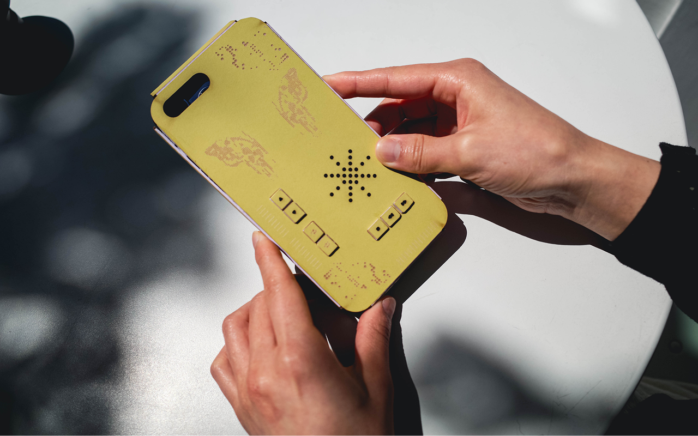
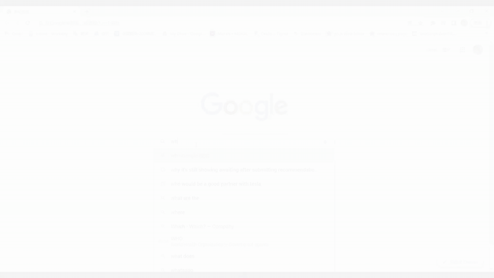
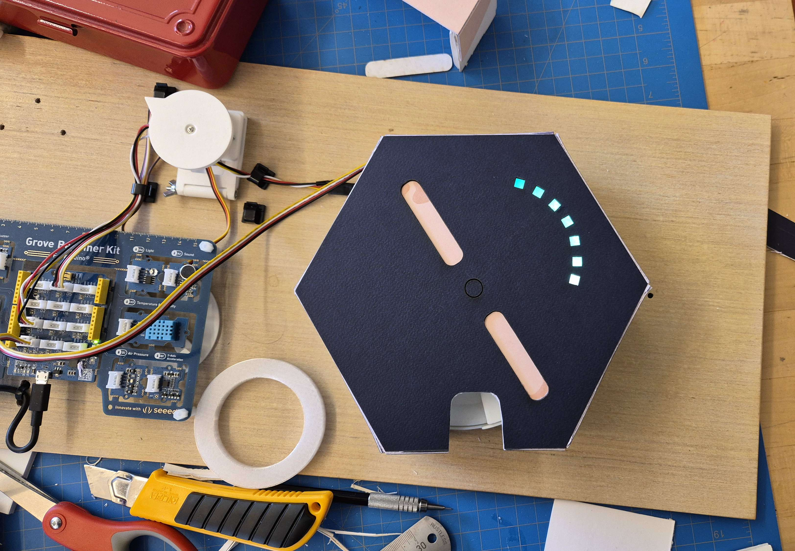
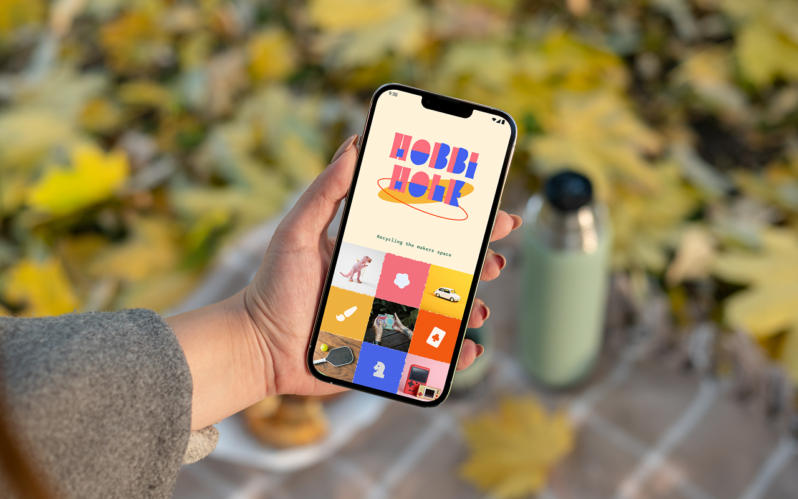
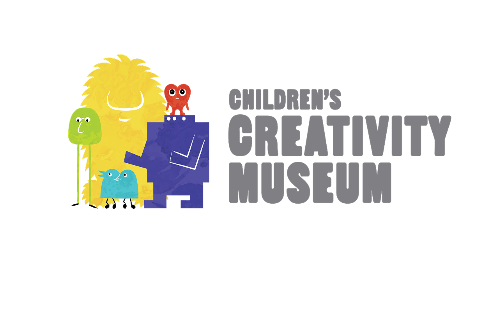
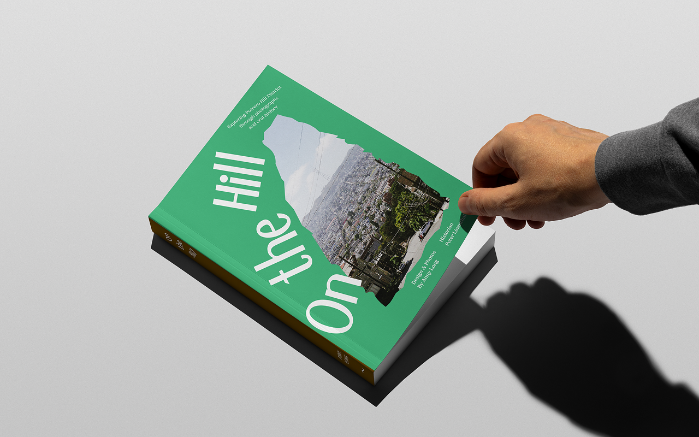
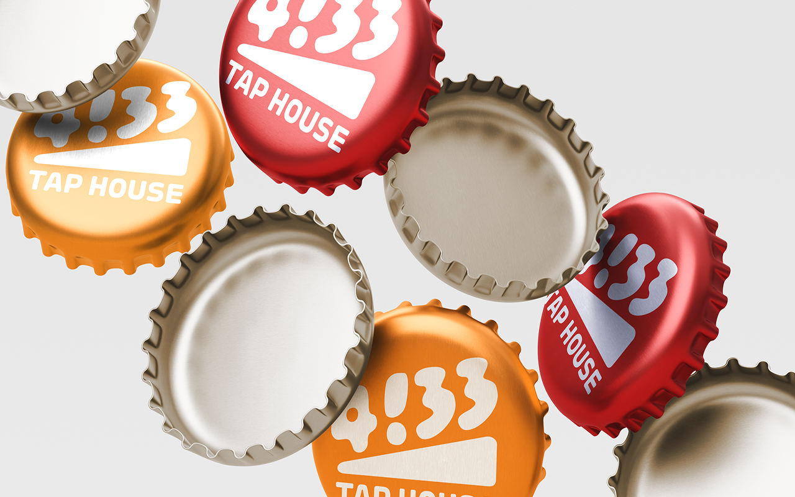
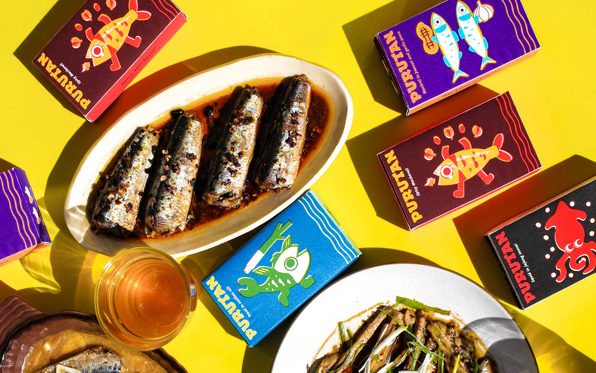

Chrysalis: Take A Pause

Chrysalis is a smart phone case and app transforms the phone into a support tool to help users with tech fatigue, giving you the control to disconnect and relax with your device.

Chrysalis is a smart phone case and app transforms the phone into a support tool to help users with tech fatigue, giving you the control to disconnect and relax with your device.

My team and I created Google Tone in 24 hours as a semantic plug-in for niche communities with high functioning autism to help pick up tone in online social media conversation.

IDK LOL

Hobbi Hole a consumer facing rental app that brings new life to previously used creative objects and games, encouraging reuse among public spaces and promoting community sharing.

During my CCM design fellowship, I created exhibition assets and activity labels guiding children to problem solve with building lego structures that consider future climate change in Yerba Buena in the next 25 years.

I produced a class photobook project into an art community exhibition. In collaboration with art directors, I produced the show bridging the Potrero Hill Archives Project and the CCA communities.

Inspired by the playfulness of Fluxus art that transforms the old into something humorous and new, 4!33 Taphouse reinvents the warehouse experience into a bright atmosphere where guests can enjoy a welcoming, quiet, and communal environment.

Elevating sardine cans to be more distinct. Creating a packaging design, using bold, riso color, whimsical fish, and simplifying the decorative style of high end tinned fish brands to make it an approachable bar snack for Gen Z and Millenials.